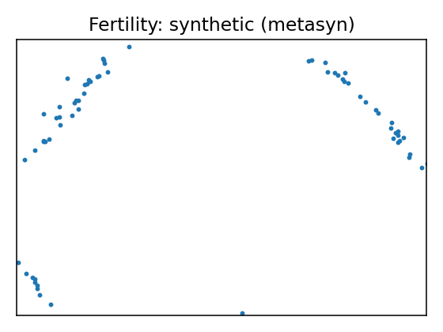
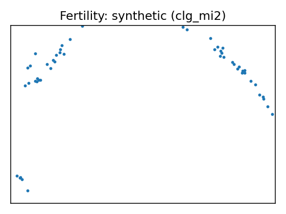
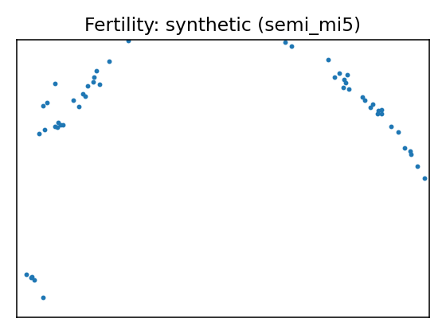
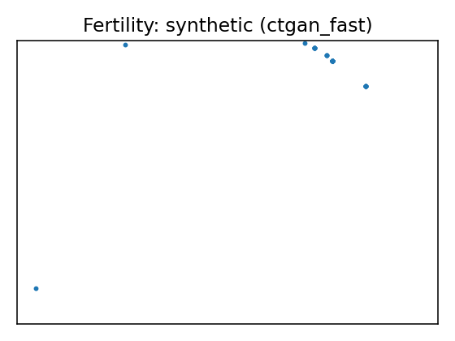
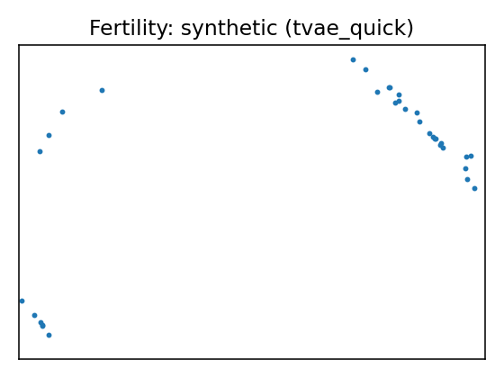
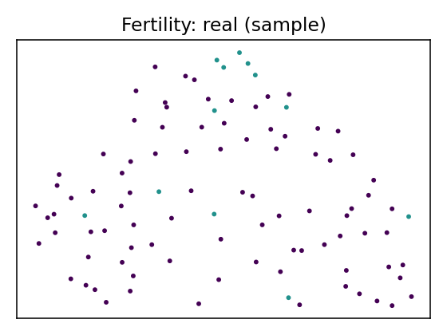
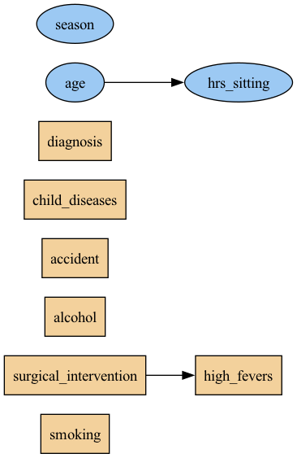

Data Report — Fertility
Documentation: Season in which the analysis was performed. 1) winter, 2) spring, 3) Summer, 4) fall. (-1, -0.33, 0.33, 1)
Age at the time of analysis. 18-36 (0, 1)
Childish diseases (ie , chicken pox, measles, mumps, polio) 1) yes, 2) no. (0, 1)
Accident or serious trauma 1) yes, 2) no. (0, 1)
Surgical intervention 1) yes, 2) no. (0, 1)
High fevers in the last year 1) less than three months ago, 2) more than three months ago, 3) no. (-1, 0, 1)
Frequency of alcohol consumption 1) several times a day, 2) every day, 3) several times a week, 4) once a week, 5) hardly ever or never (0, 1)
Smoking habit 1) never, 2) occasional 3) daily. (-1, 0, 1)
Number of hours spent sitting per day ene-16 (0, 1)
Output: Diagnosis normal (N), altered (O)
Citation: {'@type': 'schema:ScholarlyArticle', 'title': 'Predicting seminal quality with artificial intelligence methods', 'schema:author': ['David Gil', 'J. L. Girela', 'Joaquin De Juan', 'M. Jose Gomez-Torres', 'Magnus Johnsson'], 'schema:isPartOf': 'Expert systems with applications', 'schema:datePublished': 2012, 'url': 'https://www.semanticscholar.org/paper/Predicting-seminal-quality-with-artificial-methods-Gil-Girela/92759c5ee08b9e6e7b17d1ccd48a7f8c02aba893'}
Source: UCI dataset 244
SemMap JSON-LD: dataset.semmap.json · RDFa HTML
Overview
| Metric | Value |
|---|---|
| Dataset | Fertility |
| Source | UCI dataset 244 |
| Rows | 100 |
| Columns | 10 |
| Discrete | 7 |
| Continuous | 3 |
| SemMap | SemMap JSON-LD SemMap HTML |
| Missingness | Not modeled |
Variables and summary
| variable | inferred | dist |
|---|---|---|
| season | continuous | -0.0789 ± 0.7967 [-1, -1, -0.33, 1, 1] |
| age | continuous | 0.6690 ± 0.1213 [0.5, 0.56, 0.67, 0.75, 1] |
| child_diseases | discrete | 1: 87 (87.00%) |
| accident | discrete | 1: 44 (44.00%) |
| surgical_intervention | discrete | 1: 51 (51.00%) |
| high_fevers | discrete | 0: 63 (63.00%) 1: 28 (28.00%) -1: 9 (9.00%) |
| alcohol | discrete | 1: 40 (40.00%) 0.8: 39 (39.00%) 0.6: 19 (19.00%) 0.2: 1 (1.00%) 0.4: 1 (1.00%) |
| smoking | discrete | -1: 56 (56.00%) 0: 23 (23.00%) 1: 21 (21.00%) |
| hrs_sitting | continuous | 0.4068 ± 0.1864 [0.06, 0.25, 0.38, 0.5, 1] |
| diagnosis | discrete | N: 88 (88.00%) |
Fidelity summary
| umap | model | backend | disc jsd mean | disc jsd median | cont ks mean | cont w1 mean | downstream sign match |
|---|---|---|---|---|---|---|---|
 |
metasyn | metasyn | 0.058 | 0.0683 | 0.2033 | 0.1181 | 0.25 |
 |
clg_mi2 | pybnesian | 0.0647 | 0.0362 | 0.1833 | 0.1201 | |
 |
semi_mi5 | pybnesian | 0.0647 | 0.0362 | 0.1833 | 0.1201 | |
 |
ctgan_fast | synthcity | 0.3398 | 0.3911 | 0.6367 | 0.2003 | |
 |
tvae_quick | synthcity | 0.1168 | 0.1052 | 0.2933 | 0.1255 |
Privacy summary
| model | backend | n real | n synth | exact overlap rate | near duplicate rate eps | nn distance mean | k min | k pct lt5 | k map | rare qi reproduction rate | identifiability score | delta presence |
|---|---|---|---|---|---|---|---|---|---|---|---|---|
| metasyn | metasyn | 100 | 100 | 0 | 0.21 | 0.4309 | 1 | 1 | 3 | 0 | 2.6667 | |
| clg_mi2 | pybnesian | 100 | 100 | 0 | 0.22 | 0.4959 | 1 | 1 | 2 | 0 | 2.5 | |
| semi_mi5 | pybnesian | 100 | 100 | 0 | 0.22 | 0.4959 | 1 | 1 | 2 | 0 | 2.5 | |
| ctgan_fast | synthcity | 100 | 100 | 0 | 0.12 | 0.3655 | 1 | 1 | 1 | 0 | 36 | |
| tvae_quick | synthcity | 100 | 100 | 0 | 0.08 | 0.3762 | 1 | 1 | 1 | 0 | 7 |
Models
| UMAP | Details | Structure | |||||||||||||||||||||||||||||||||||||||||||||||||||||||||||||||||||||||||||||||||||||||||||||||||||||||||||
|---|---|---|---|---|---|---|---|---|---|---|---|---|---|---|---|---|---|---|---|---|---|---|---|---|---|---|---|---|---|---|---|---|---|---|---|---|---|---|---|---|---|---|---|---|---|---|---|---|---|---|---|---|---|---|---|---|---|---|---|---|---|---|---|---|---|---|---|---|---|---|---|---|---|---|---|---|---|---|---|---|---|---|---|---|---|---|---|---|---|---|---|---|---|---|---|---|---|---|---|---|---|---|---|---|---|---|---|---|---|
 |
Real data | ||||||||||||||||||||||||||||||||||||||||||||||||||||||||||||||||||||||||||||||||||||||||||||||||||||||||||||
Model: metasyn (metasyn)
Per-variable fidelity
Downstream metrics
Privacy metrics
|
| ||||||||||||||||||||||||||||||||||||||||||||||||||||||||||||||||||||||||||||||||||||||||||||||||||||||||||||
Model: clg_mi2 (pybnesian)
Per-variable fidelity
Privacy metrics
|
 | ||||||||||||||||||||||||||||||||||||||||||||||||||||||||||||||||||||||||||||||||||||||||||||||||||||||||||||
Model: semi_mi5 (pybnesian)
Per-variable fidelity
Privacy metrics
|
 | ||||||||||||||||||||||||||||||||||||||||||||||||||||||||||||||||||||||||||||||||||||||||||||||||||||||||||||
Model: ctgan_fast (synthcity)
Per-variable fidelity
Privacy metrics
|
 | ||||||||||||||||||||||||||||||||||||||||||||||||||||||||||||||||||||||||||||||||||||||||||||||||||||||||||||
Model: tvae_quick (synthcity)
Per-variable fidelity
Privacy metrics
|
|
{kind=link}